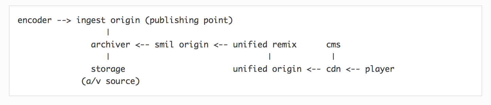

A new and innovative approach for server side remixing of content
Mix
The basic idea of Unified Remix is that it 'mixes' clips from various origins into a single stream.
This means that players do not see any discontinuity, the stream has a single origin and a single timeline.
Personalize
Viewer info (e.g. session-id or cookie) can be used to personalize streams on
any level. From a personalized stream for every viewer to streams for groups of
viewers (e.g. based on geolocation, subscription model) or even a single
stream for all viewers (e.g. a bumper).
Monetize
Creating a remixed stream opens new doors for content owners to monetize content
but also offers new options for creating personalized streams of for instance live archives.
Everywhere
Best of all, Unified Remix will create a stream that plays on all platforms in all
formats and devices and as such it provides a great multiplatform experience.
First, the SMIL origin creates a SMIL playlist and for
instance could call into an Ad network, use a predefined rule (in the CMS) or even
co-operate with the broadcast automation to get EPG info to understand at which
time the clip should be placed.
Secondly, Unified Remix creates an MP4 file that references the media listed
in the SMIL playlist.
Remix is a webserver module
that handles HTTP request on-the-fly, dynamically. Requests can be forwarded and
cached as it is all HTTP.
Lastly, the Unified Origin ingests the reference MP4 and creates a single stream
without any discontinuity: to a player the stream has a single origin
and a single timeline.
Bumper for Everyone (VOD)
This SMIL Origin creates a SMIL playlist with two entries. The first entry
points to a bumper, and the second entry points to the originally requested media.
The first item is the bumper which is shown to every viewer.
It can be one and the same bumper for all, or it could be combined with a geolocation
based rule set to for instance show one bumper to viewers from location A and
another bumper to viewers from location B.
See the next cell for a demo: a pre-roll in essence is the same.
This SMIL Origin creates a SMIL playlist with pre-, mid- and postroll
entries. Any combination is allowed.
Which combination and which items can be determined by a recommendation service or a rule
set accessed from the CMS based on the viewer info that is passed from the player
(e.g. session-id or cookie).
Creating a scalable, performing and reliable catch-up TV or nPVR service can be challenging.
How to deal with fast turn around times for the creation of VOD clips but
also how long will you allow your viewers to go back in time?
Could you offer an infinite live archiving solution that also greatly
reduces the creation time of clips?
Unified Remix provides
- instantly available clips
- scale, as it’s just files - no database
- playout from the archive with new ads or without ads
(by mapping the EPG to the player URL).
- straightforward integration in catch-up TV or nPVR workflows
(by mapping archived content to the player URL).
Unified Remix creates a SMIL playlist and reference MP4 from archived content which the
Unified Origin then streams to what the player requested.
Moving the content from the publishing point (the origin that is ingesting the
live stream sent by the encoder) to long-term archive can be achieved using a batch process.
Schematically this looks like the following:

Watermarking
Watermarking of video streams can be done by marking certain fragments
in a certain order. The mark itself will be embedded in to the encoded
video or audio.
When for instance a playlist is created from two sources (one un-marked,
one marked) Remix then can resolve this playlist to an MP4 as input for
the origin.
Dynamic Ad Insertion
This SMIL Origin takes information from the CMS (session, cookies, etc)
and transforms it into a call into the Ad Network. The list of Ad Content
that is the best match for this viewer is returned by the Ad Network.
VAST may be used for the communication with the Ad Network.